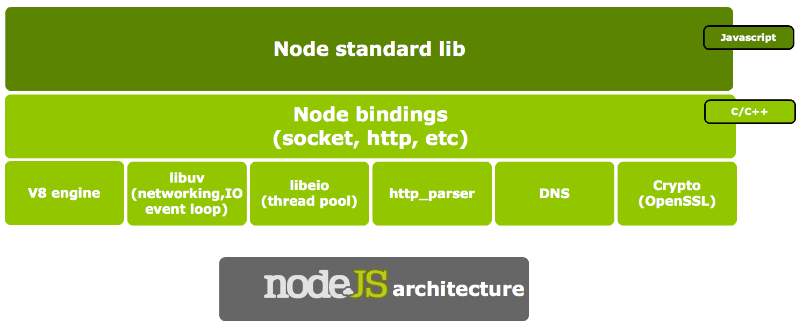

Server side JS is not a brand new idea; many frameworks tried to make it happen on the server without success.
A few months ago, browser wars dramatically improved browser performance: one example - Google developed the V8 engine and they strongly focused on performance (runtime optimizations and garbage collection)
javascript dealt with its bad reputation (as a hacky language) and it is now considered as a 1st class language; tere's a fair number of devs around the world and the amount of code is huge...
Nodejs focuses on real problems; it's been specifically designed for network applications and web applications
NodeJS at a glance
Main architecture

NodeJS is branded as "a solution" or "a platform" rather than a framework.
As a matter of fact, tons of frameworks are being written on top of node.
NodeJS has a:
simple, fluent API - strong focus on network and web
efficient and async bindings
optimized and powerful V8 VM (google chrome)
libuv (platform-dependent blocks in here; windows, unix support)
libeio, http_parser, DNS, crypto
A random Java webapp
blocking IO
Makes synchronous webservices calls
waits... waits...
and hogs resources !
Let's talk about a random Java web application
Our application sends a request to a remote webservice
and waits for a response and still hogs resources
Have you ever crashed a server because all threads are busy doing nothing but waiting
Same thing in NodeJS
Non-blocking IO
Non-blocking IO
Asynchronous callback
While waiting, it sits idle !
NodeJS widely uses non-blocking IO
So we must use asychronous callbacks
While waiting for a response, Node does something else, or sits idle
NodeJS basics
Main concepts
Event loop
Non-blocking IO
asynchronous golden jail
Strength: what JS has and has not
The event loops sits there and waits for system events. The web is all about events - why not go all the way and use that concept in our applications?
Standard APIs are massiverly asynchronous, even though you can use their synchronous couterparts if you want.
NodeJS developers often talk about this "asynchronous golden jail"; you're bound to write async code, which makes total sense on the long run.
functional programming concepts; JS doesn't come with IO APIs;
NodeJS in the cloud
Concurrency
No shared state in memory
Makes sense in a multi-core environment
Message sending/receiving between instances
NodeJS enforces no shared state in memory
You can spawn one node instance per core to maximize throughtput
and make them communicate through messages
Actually, you can see NodeJS as a simple building block in the cloud
Usual complaints about callbacks
Haters gonna hate
Big mess of anonymous functions
Makes sense in a multi-core environment
Message sending/receiving between instances
People tend to write callbacks inside callbacks and so on...
Code readability is awful, separation of concerns as well
But that's an invalid complaint
Dealing with async in code
going functional
Naming callbacks
Using async frameworks like async.js
functional + async patterns
First, you can pull out these callbacks and name them
Even better, you should use one of the async abstraction frameworks, like async.js or Step
Async.js provides both functional items (map, reduce, filter...) and async items (parallel, series, waterfall)
For making network centric programs
Any protocol
Network Packet
HTTP, HTTPS, mail, FTP, Binary...
Streams
60.000+ permanent connection/server
Package management & storage
Comparable to Maven + Nexus
NodeJS 1st class citizen
Repository powered by
NodeJS(client)
CouchDB (server)
Transitive dependency
Internally used @Yahoo & Yammer, notably
CouchDB means repository synchronisation
-> private repositories repository
synchronised with main one (and external ones)